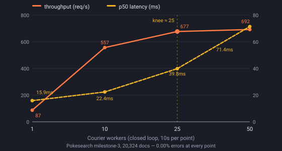

Find the breaking point
Every backend has a concurrency past which more workers buy latency instead of throughput. Here is PokéSearch's, measured through this tool. Pick a point and Courier loads the config that reproduces it - then press Start run.

Run sequence
Pick a request in the sidebar to open it here.
Query parameters
Values may use {{randomWord}} or
{{randomPokemon}} — each dispatched request draws a
fresh random value, so a performance run queries something different
every iteration.
Assertions
Results appear here once a run is under way.
Percentiles are computed once, after the run, over the samples the aggregator owns — there are deliberately none mid-run.
SLA ladder
Apdex — T = 25ms
Latency
Latency distribution
Per request
Errors
Courier is a closed-loop tester: workers wait for each response before
issuing the next, like hey, not open-loop fixed-rate like vegeta.
Under saturation this understates tail latency (coordinated omission).